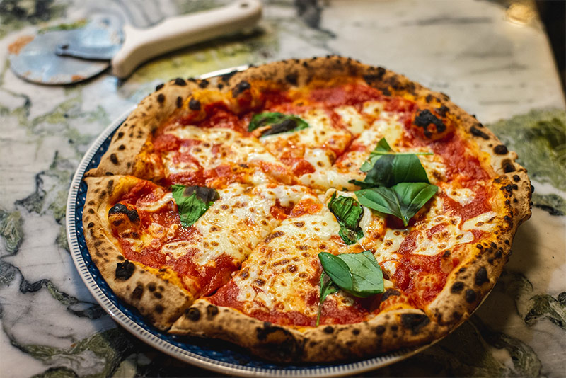

פיצה ביתית כמו באיטליה
מתכון לפיצה בדיוק כמו של סבתא איטלקייה, יחד עם רוטב עגבניות שמשתדך בול עם הבצק
רכיבים
לבצק:
- 500 גרם קמח
- 2 כפיות שמרים יבשים
- כפית סוכר
- כפית מלח
- 3-4 כפות שמן זית
- כוס מים פושרים
לרוטב עגבניות:
- מעט שמן זית
- 3 עגבניות קלופות וקצוצות
- 5 שיני שום כתושות
- צרור בזיליקום טרי
- 1/2 כפית סוכר
- 1 כפית מלח
- 2 כפות רסק עגבניות
- 1 כפית אורגנו יבש

להרכבה:
- 300 גרם גבינה קשה מגוררת מכל סוג שאוהבים לפיזור על הפיצה
- תוספות שאוהבים (פטריות, זיתים, גבינה מלוחה וכד')
שלבי ההכנה
- מכינים את הבצק: מערבבים בקערה את הקמח, השמרים היבשים ואת הסוכר. יוצרים גומה בקערה שופכים לתוכה את המים, השמן והמלח, ומתחילים ללוש. מוסיפים תוך כדי לישה את 1/3 כוס המים הנוספת עד שנוצר בצק גמיש. יוצרים מהבצק כדור ומקמחים אותו קלות. מחזירים לקערה, מכסים את הקערה בניילון נצמד ומתפיחים כ-1/2 שעה.
- לאחר זמן התפיחה פורסים על משטח העבודה נייר אפייה מקומח קלות. לשים את הבצק בשנית ומרדדים אותו לצורה עגולה על נייר האפייה המקומח (הכמות מספיקה לפיצה אחת ענקית או שתיים בינוניות). מעבירים לתבנית ובעזרת לחיצות קלות יוצרים מעין מסגרת מסביב לפיצה.
- אופן הכנת הרוטב: מניחים במחבת עם שמן זית את העגבניות עם השום. מבשלים כמה דקות ומוסיפים את הבזיליקום ואת שאר התבלינים והרסק. מסירים מהאש.
- מברישים בשמן זית את שולי הבצק, מורחים על בסיס הבצק את הרוטב, מפזרים גבינה ותוספות שאוהבים, ואופים את הפיצה בתנור שחומם מראש ל-200 מעלות עד להשחמה (מתחילים לבדוק אחרי 15 דקות).